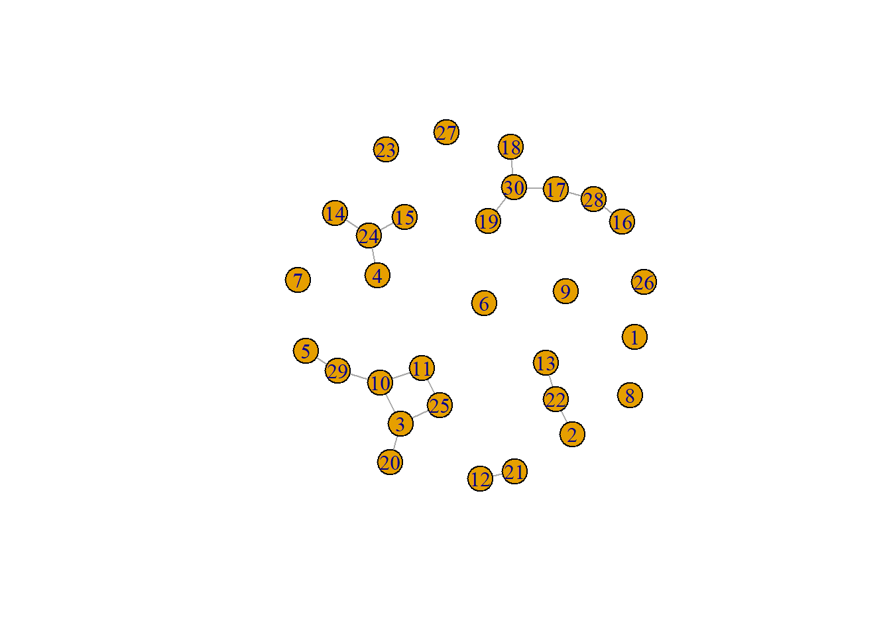

Internal Mentoring and Tech Advice Networks
Introduction
At the January 9, 2023 all company Monday meeting, Melanie Murphy presented on the Advanced Analytics and Data Science team. At the end of her presentation, we requested those interested in engaging with this team to fill out a small survey about their analytics background and where they work within the company. The final two questions, however, asked about respondents engagement with colleagues. They were:
- Who within MSI are you able to turn to for mentorship/career guidance?
- Who within MSI do you turn to most often to discuss or get help on technical questions?
The responses to these questions are the topic at hand in this post. They allow us to analyze informal networks that have developed within MSI, one for mentoring and the other for specific technical questions. We will then compare these with the official organizational structure.
Our methology and data
The data come from a voluntary, virtual survey that was done during a company meeting. The response rate was low so the Advanced Analytics team identified additional staff to take the survey to give us more data points. All names have been anonymized and replaced with unique IDs.
We are looking at networks so we have to identify the people and the connections. In network analysis these are called, nodes and edges, respectively.
Let’s observe the first five rows of data for the mentor network and their connections.
Code
#read in the dataframes
#mentoring
mentor_nodes <- readxl::read_xlsx(here::here("network analysis sandbox/data/nodes_mentor.xlsx"))
mentor_edges <- readxl::read_xlsx(here::here("network analysis sandbox/data/edges_mentor.xlsx"))
#tech questions
tech_nodes <- readxl::read_xlsx(here::here("network analysis sandbox/data/nodes_tech.xlsx"))
tech_edges <- readxl::read_xlsx(here::here("network analysis sandbox/data/edges_tech.xlsx"))
reactable::reactable(mentor_nodes[1:5,]
, defaultColDef = colDef(vAlign = "center"
, headerVAlign = "bottom")
, fullWidth = F
, bordered = F
, outlined = T
, highlight = T) |>
add_title("Node IDs"
, align = "left"
, font_color = my_pal[[5]]
, font_size = 18)
reactable::reactable(mentor_edges[1:5,]
, defaultColDef = colDef(vAlign = "center"
, headerVAlign = "bottom")
, fullWidth = F
, bordered = F
, outlined = T
, highlight = T)|>
add_title("Nodes and Connections"
, align = "left"
, font_color = my_pal[[5]]
, font_size = 18)Node IDs
Nodes and Connections
Code
#convert the mentor_edges dataframe to a matrix
edges.mat <- as.matrix(mentor_edges)
#then convert it to a graph object
g <- graph.edgelist(edges.mat, directed = F)In the entire mentor dataset there are 30. These nodes have 18 connections. The resulting network looks like this.
Code
plot(g)